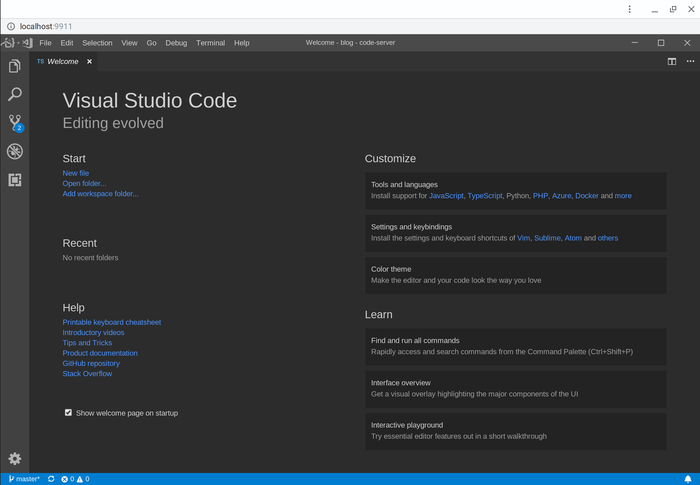
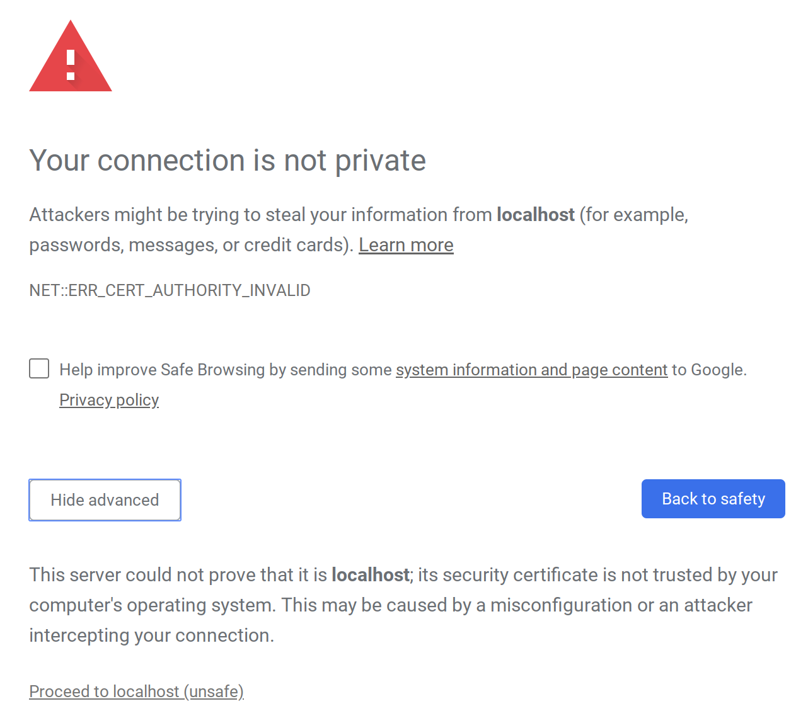
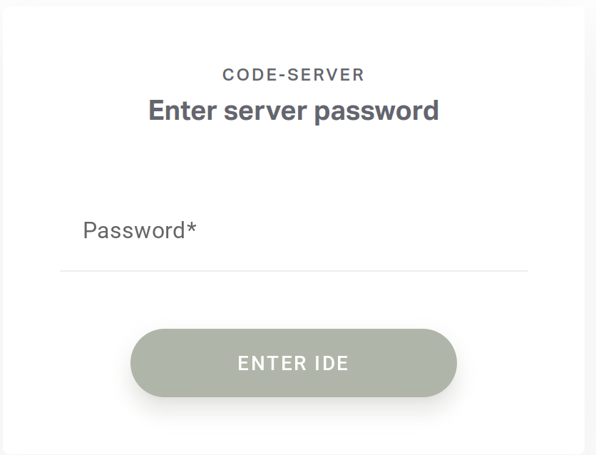
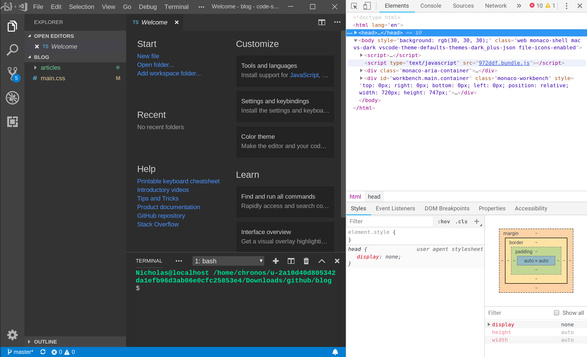
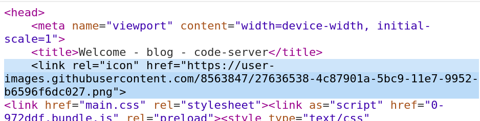
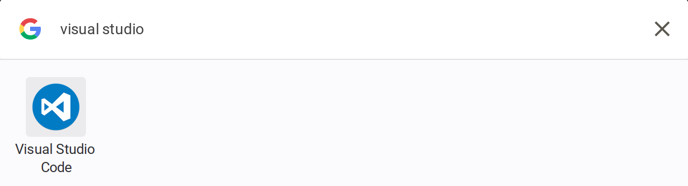

A guide for the poor souls without Crostini
By Nick Marcopoli, March 13, 2019
I recently made the jump from a Windows laptop to a Chromebook Pixel LS, a laptop that was ahead
of its time. When the Pixel released, Chrome OS didn't support Android apps through the Play Store, most
chromebooks didn't have touch screens, and the thought of paying upwards of $1300 for a machine that
seemed like a glorified web browser with monster specs seemed absurd. Fortunately, things have changed
since then! Chromebooks have become quite capable in the past few years - full Android app support
coupled with the fact that most people don't need more than a web browser to do their day-to-day
computing has lead to Chrome OS being taken a little more seriously as a daily driver OS than before.
The Pixel does almost everything I need. I use Google Docs for all of my word processing, the Zoom
Chrome app for my online courses, and I use the crosh shell for any dev work I need to do. I only missed
using Microsoft's Visual Studio Code as a text editor! I tried Crouton with Xiwi, which worked fine, but
I noticed a substantial input delay that was especially noticeable when scrolling. I hear that VSCode
works great on newer Chromebooks with Crostini, but the Pixel doesn't support Crostini (yet) :(
I stumbled across coder.com and thought that it could be a way for me to use VSCode without Crostini. It works, but the free tier is limited in its power and storage. I wanted to take advantage of the Pixel's surprisingly good specs, so I took a look at their GitHub repository to see if there was any way that I could host it myself. Good news - I can! They included a binary in the repository that starts up a Coder server that you can access from localhost in a web browser.
I have a VPS set up on DigitalOcean that I use to run some web apps. My first idea was to set up the Coder server on my VPS and access the editor from Chrome. I ran the binary on the VPS, and immediately received an "out of memory" exception. Being the cheapskate that I am, I pay for the $5 a month VPS. Unfortunately, the Coder server won't run on such a small amount of memory. Plus, Coder's website gives you this option of running VSCode in the cloud anyway, so I decided to forget using self-hosting Coder for now.
Next, I tried just running code-server locally. After a little bit of fiddling, it works! I set up
the server to run on one of my open ports and I'm able to access it easily through my browser. There's a
few glitches here and there; for example, I can't view markdown previews in the app, and there's a few
extensions that don't show up in the extensions search that do on normal installs of VSCode. All in all,
though, it's a great way for me to use my favorite text editor while I wait for some sort of official
linux support for my device.

VSCode Running on my Chromebook
Some assumptions I'm making if you're following this tutorial:
./code-server and you'll have the server up and running on its
default port.

That's just a security warning due to the server's default use of https. Once you click "Proceed to localhost", you'll see this screen:
You can find the password that code-server wants you to use in the stdout of the server you just ran. Put that in the password field and you're good to go.--no-auth flag when
you run the server. Now you won't see any security warnings or password prompts, and you'll be able
to go straight into VSCode when you access the localhost port.
.bashrc to start the server for me in the background whenever
I open the shell:
if ! pgrep -x "code-server" > /dev/null
then
nohup /path/to/server/code-server --no-auth -p 9911 >/dev/null 2>&1 &
fi
Ctrl-Shift-I, and in the "Element" tab click on the "head" line.

Right click on the "head" line and choose "Edit as HTML". Add the following line to the "head":
where the link afterhref= is the link to your image. Now, the icon of the site has
changed from the blank icon to your new, custom icon.

You now have VSCode on your Chromebook!